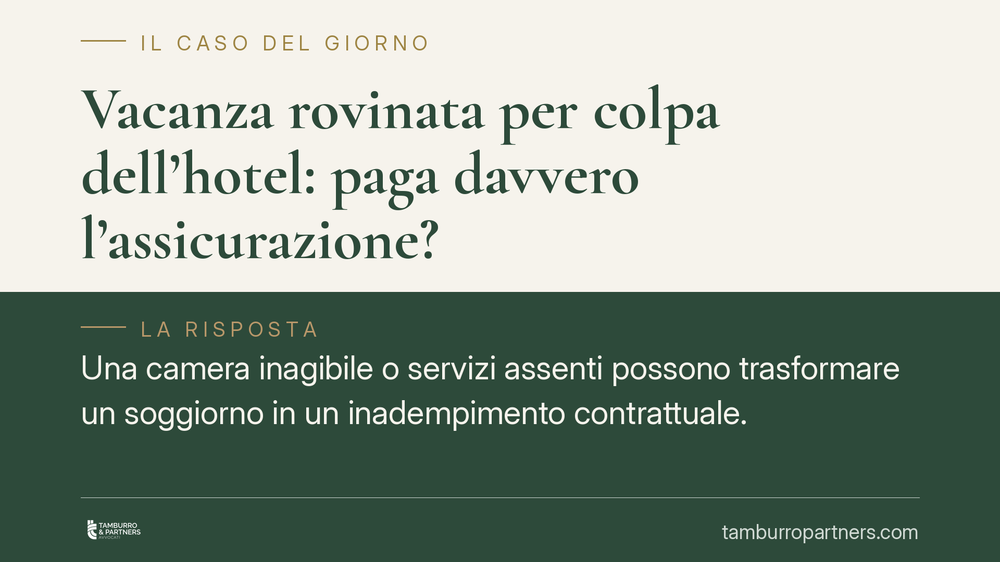

Vacanza rovinata per colpa dell'hotel: paga davvero l'assicurazione?
Una camera inagibile o servizi assenti possono trasformare un soggiorno in un inadempimento contrattuale. Ma la polizza RC dell'albergatore protegge davvero il turista? La risposta richiede di tenere distinti due piani: il rapporto tra cliente e hotel e quello, separato, tra hotel e compagnia assicurativa. Confonderli porta ad attese sbagliate su chi, in concreto, pagherà il risarcimento.

Il fatto e i due piani da non confondere
Quando un albergo non garantisce la camera prenotata o la rende inagibile, si configura un inadempimento del contratto di albergo. Il cliente ha titolo per chiedere la risoluzione e il risarcimento del danno.
Altro, e distinto, è il rapporto tra l'albergatore e la sua compagnia assicurativa. Che l'hotel abbia una polizza di responsabilità civile non significa, di per sé, che il turista possa rivolgersi direttamente all'assicuratore. Questo è il punto decisivo, spesso frainteso.
La base normativa: contratto di albergo o pacchetto turistico
Il primo passaggio è qualificare il rapporto. Se il cliente ha stipulato un semplice contratto di albergo, l'inadempimento si valuta secondo le regole generali sulle obbligazioni (artt. 1218 e seguenti c.c.).
Diverso è il caso del pacchetto turistico (volo più soggiorno, o più servizi combinati acquistati unitariamente). Qui opera il Codice del Turismo. Il danno da vacanza rovinata ha la sua base nell'art. 47 del D.Lgs. 79/2011, che riconosce al viaggiatore il risarcimento del pregiudizio da tempo di vacanza inutilmente trascorso in caso di inadempimento non di scarsa importanza. L'art. 46 dello stesso decreto riguarda invece un istituto diverso: le conseguenze della modifica o dell'annullamento del pacchetto prima della partenza, con i relativi diritti di recesso. Accorpare le due norme è un errore ricorrente.
L'art. 1460 c.c.: autotutela, non risarcimento
Di fronte all'inagibilità della camera, il cliente può anche sospendere la propria prestazione, ad esempio il pagamento, invocando l'eccezione di inadempimento ex art. 1460 c.c. È bene chiarire che questo è uno strumento di autotutela: consente di non adempiere finché l'altra parte è inadempiente, ma non costituisce di per sé il fondamento del diritto al risarcimento, che resta ancorato all'inadempimento contrattuale.
La copertura RC: colpa grave sì, ma non in automatico
Sul versante assicurativo, l'orientamento della giurisprudenza di legittimità conferma che la polizza RC dell'albergatore può coprire anche l'inesatto adempimento contrattuale e la colpa grave.
Attenzione però all'art. 1900 c.c.: l'assicuratore non risponde dei sinistri cagionati con dolo o colpa grave dell'assicurato, salvo patto contrario. Significa che la copertura della colpa grave è una scelta negoziale, frutto di una clausola espressa, non un effetto automatico della polizza. Vanno quindi lette con attenzione le eventuali clausole di esclusione.
Rilevano inoltre le clausole claims made, che legano la copertura al momento in cui la richiesta di risarcimento è presentata, a differenza del modello loss occurrence, ancorato al momento del fatto dannoso. La differenza incide sull'operatività della garanzia nel tempo. L'assicurato ha poi l'onere della tempestiva denuncia del sinistro ex art. 1913 c.c.: il ritardo può pregiudicare la copertura.
L'azione diretta del danneggiato: la regola e l'eccezione
Ecco il nodo che risponde alla domanda iniziale. Nella RC non obbligatoria, qual è quella dell'albergatore, il terzo danneggiato di regola non ha azione diretta verso la compagnia assicurativa. L'azione diretta è prevista solo in casi tipizzati dalla legge, come la RC auto.
La conseguenza pratica è netta: il turista agisce contro l'albergatore, non contro l'assicuratore. Sarà poi l'albergatore, nel rapporto interno, a rivalersi sulla propria compagnia secondo i termini della polizza. Il cliente, insomma, ha come controparte l'hotel; la copertura assicurativa è una garanzia di solvibilità indiretta, non un diritto azionabile dal danneggiato.
Cosa fare in concreto
- Documentare immediatamente il disservizio con foto, video e comunicazioni scritte all'hotel, annotando data e ora delle contestazioni.
- Inviare un reclamo formale all'albergatore, quantificando il pregiudizio e qualificando correttamente il rapporto come contratto di albergo o pacchetto turistico.
- Verificare, se si tratta di pacchetto, i termini e le modalità di contestazione previsti dal contratto e dal Codice del Turismo.
- Indirizzare la richiesta di risarcimento all'albergatore, e non direttamente alla sua compagnia, salvo i casi in cui la legge preveda l'azione diretta.
- Conservare prova dei costi sostenuti e del pregiudizio da tempo di vacanza perduto, utile ai fini del danno ex art. 47 D.Lgs. 79/2011.
Contributo informativo a cura di Tamburro & Partners - Avv. Giuseppe Tamburro. Non costituisce parere legale.
Ogni contratto ha il suo equilibrio.
Se vuoi una revisione delle clausole o una redazione su misura, scrivi allo studio. Ti rispondiamo entro un giorno lavorativo.